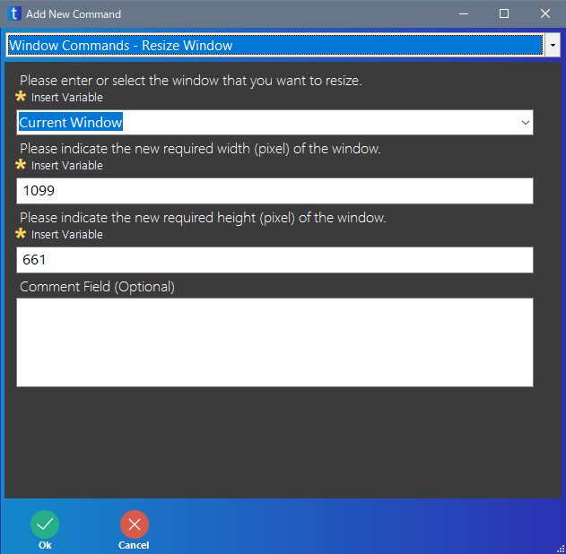

ペイントを操作する
ここの内容はバージョン 3.3.0.0 までの変数を意味する囲いが [ ] であるときの内容です。そのため、最新のバージョンには対応していない部分があります。
ネタなスクリプトですが、ペイントで「Hello World」と書きます。
- ペイントを実行
- キャンバスサイズを 640×480 にする
- ブラシの種類、サイズを指定
- 「Hello World」と書く
変数 [fm]、[w] の宣言
ペイントの実行 (mspaint がペイントのプログラム名)
ペイントの画面のタイトルを変数 [fm] に代入し、UI Automation などで使用する
リボンインターフェースで Alt+R,E でキャンバスサイズの変更
UI Automation で ピクセル のラジオボタンをクリック
Alt+H でキャンバスの横を 640 に変更
同様に Alt+V でキャンバスの高さを 480 に変更
縦横比を維持するにチェックを入れてある場合、キャンバスの幅が 640 以外の数字になるので、その数字を Ctrl+C でクリップボードにコピー
そして、Get Clipboard Text を使い、変数 [w] にキャンバスの幅を入れる
If Begin で変数 [w] が 640 ではないときだけ、処理をする判定

UI Automation で OK をクリック
シーケンスになっている部分
ペイントの画面の位置と大きさを変更する
ペイントの画面の位置を調整
」
ペイントの画面の大きさを調整

シーケンスになっている部分、Record を使用
マウスを動かし、「Hello World」と書く
キャンバスサイズの変更画面
| パーセント/ピクセル | Alt+B ではそれぞれを選択できないので、UI Automation を使う |
| 水平方向 | Alt+H 入力された値は、UI Automation では取得できない (バージョン 3.2.0.0 時点) |
| 垂直方向 | Alt+V |
| 縦横比を維持する | Alt+M でチェックを入れる、外すは可能 UI Automation ではチェックの状態が取得できない (バージョン 3.2.0.0 時点) |
| OK | 今回は UI Automation でクリック 実際は Send Keystrokes で ENTER を入力しても OK |
| キャンセル | 今回はクリックしていないが、Send Keystrokes で ESC を入力すれば OK |
完成図